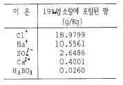
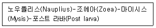

해양조사산업기사 (2004-05-23 기출문제)
1과목: 물리해양학
1. 표층염분이 최고값을 나타내는 곳은?
- 적도해역
- 아열대해역
- 극해역
- 연안하구해역
(정답률: 69%)

2. 해수의 염분이 증가되면 역비례로 감소되는 물리량은?
- 음파의 전파속도
- 해수의 밀도
- 해수의 결빙온도
- 해수의 전기전도도
(정답률: 83%)
3. 우리나라 서해연안에서 해수의 유동을 조사 하고자 할 때 연속조사를 하는데 소요되는 최소한의 기간은?
- 7 일간
- 15 일간
- 23 일간
- 30 일간
(정답률: 95%)
4. 일반적으로 대양 표면에서 해수온도의 대략적인 변화 범위는?
- -2℃ ~ 30℃
- 0℃ ~ 30℃
- -4℃ ~ 30℃
- 2℃ ~ 30℃
(정답률: 73%)
5. 다음 크롬웰 해류(cromwell current)에 관한 설명 중 틀린 것은?
- 북적도 해류 바로 밑에서 서향하며 흐르는 저층류이다
- 그 두께는 약 200m이고 폭은 약 300km 이다.
- 북위 2° 에서 남위2° 에 걸쳐 나타난다.
- 유속은 축에 있어서 최고 약 1.5m/sec에 이른다.
(정답률: 64%)
6. 수색(水色)에 관한 설명이다. 틀린 것은?
- 해면을 수직 위에서 보았을 때 나타나는 색을 말한다
- 열한가지 색으로 되어 있는 포오렐수색계를 사용하여 관측한다.
- 번호가 낮을수록 노랑색을 띈다.
- 우리나라 근해의 수색은 쿠로시오 해역에서는 1∼2이고 연안부근에서는 5∼7이다.
(정답률: 67%)
7. 표면 수온의 관측에 잘 이용 되지 않는 것은?
- 복사 온도계
- 막대형 온도계
- 전도 온도계
- 전기(저항)온도계
(정답률: 80%)
8. 다음 중 코리올리의 힘에 관계가 없는 것은?
- 표면해류의 모양은 환류를 형성하며 북반구에서는 시계방향으로 돈다.
- 목욕조에서 물이 빠질 때 환류를 형성한다.
- 코리올리 힘은 좌표계의 선택으로 생기는 힘이다.
- 지형류가 발생하는 것은 중력에 코리올리힘이 합해지기 때문이다.
(정답률: 78%)
9. 풍파와 놀(swell)에 관한 설명이다. 틀린 것은?
- 풍파는 파형, 크기, 파고 등이 불규칙하다.
- 놀은 대개 무리를 지어 전파하고 높은 파도가 수 분간 계속된 다음 1∼2분간 낮은 파도가 계속된다.
- 놀은 봉우리의 폭이 좁고 뾰족하며 파장이 짧다.
- 풍파는 단시간내에 변하여도 어느것도 정확히 모양이 같은 것이 없다.
(정답률: 58%)
10. 역학적 해류계산법(dynamic method)과 무관한 것은?
- 기준면
- 밀도분포
- 마찰력
- 압력경도력
(정답률: 42%)
11. 조석형태수가 가장 작은 조석은?
- 반일주조
- 반일주조가 우세한 혼합조
- 1일주조가 우세한 혼합조
- 1일주조
(정답률: 78%)
12. 계절 수온 약층이 가장 잘 형성되는 시기는?
- 봄
- 여름
- 가을
- 겨울
(정답률: 82%)
13. 해수밀도 표기법에서 사용되는 시그마티(σ t)는 수온, 염분, 압력 중 어느 변수가 일정하다고 간주하고 사용 되는가?
- 수온
- 염분
- 염분과 압력
- 압력
(정답률: 64%)
14. 해양에서 발산하는 복사열의 크기는?
- 뉴톤의 운동법칙에 따른다.
- 만유인력법칙을 따른다.
- 볼츠만법칙을 따른다.
- 수압에 따른다.
(정답률: 64%)
15. 다음 서안 경계류(western boundary current)에 관한 설명 중 가장 옳은 것은?
- 위도 35~40도에서 대륙사면을 따라 동쪽으로 흐르면서 사행운동을 한다.
- 폭이 1000km이상으로 넓고 0.1~0.2m/sec의 느린 속도로 흐른다.
- 한류와 난류가 만나는 경계면에서 많이 발생한다.
- 위도차에 따른 표면해수의 밀도차가 주 발생 원인이다.
(정답률: 70%)
16. 지형류(geostrophic current)의 세기는?
- 수평 압력구배가 클수록 빠르다.
- 연직 압력구배가 클수록 빠르다.
- 해저 지형구배가 클수록 빠르다.
- 해안선이 복잡할수록 빠르다.
(정답률: 66%)
17. SOFAR channel에 대한 설명 중 옳은 것은?
- 태양광선의 산란이 극대인 층에서 형성된다.
- 음파전달 속도가 극소인 층에서 형성된다.
- 수온 4℃이하에서만 형성된다.
- 주로 수심이 얕은 해역에서 형성된다.
(정답률: 90%)
18. 다음 기기들 중 사용 목적이 다른 하나는?
- Sextant
- GPS
- Decca Trisponder System
- Side Scan Sonar
(정답률: 63%)
19. 관성운동(inertial motion)에서 원운동의 운동주기는? (단, f는 Coriolis parameter)
- 2π /f
- π /f
- f/2π
- f/π
(정답률: 86%)
20. 파의 험도(steepness)로 부터 알 수 있는 것이 아닌 것은?
- 파의 나이
- 파의 안정도
- 파의 에너지
- 항해시 위험도
(정답률: 57%)
2과목: 화학해양학
21. 해양의 유류오염시 사용되는 유겔화제(油Gel化劑)사용에 대한 설명이 잘못된 것은?
- 유출유를 응고시켜 기름의 확산을 방지할 수 있다.
- 유출유가 경질유인 경우 휘산(揮散)을 억제한다.
- 유화(乳化, Emulsion)한 유출유 처리에 적당하다.
- 불소계 계면활성제의 일종이다.
(정답률: 58%)
22. 해양에서 인공 방사성원소(14C, 3H, Pu 등)를 이용하여 측정 하는 것이 아닌 것은?
- 조석의 측정
- 해수의 나이 측정
- 해수의 교환율 측정
- 수괴의 유동추적
(정답률: 78%)
23. 해수 중의 14C를 측정하여 심층해수의 나이를 잴 수 있다. 14C에 관한 다음 설명 중 틀린 것은?
- 베타선을 방사한다.
- 반감기가 약 5,700년이다.
- 공기중의 농도는 계속 줄어들고 있다.
- 살아있는 식물에 의하여 흡수된다.
(정답률: 57%)
24. 해양에서 부유식물이 급격히 증가하여 해수중의 CO2가 감소할때 대기에서 이산화탄소의 공급이 뒤따르지 못하는 경우 해수의 pH는 어떻게 되는가?
- pH가 내려간다.
- 변화없다.
- 전 탄소 감소는 pH에 변화를 주지 않는다.
- pH가 올라간다.
(정답률: 82%)
25. 빗물의 산성도를 강하게 하여 산성비를 유발시키는 대기 중의 물질 중 거리가 먼 것은?
- CO2
- NOx
- SOx
- Pb
(정답률: 79%)
26. 해수의 자정능력에는 한계가 있어 연안해수에 유기물이 너무 많으면 오염될 가능성이 크다. 다음 중 오염지표 지수로 이용되는 것이 아닌 것은?
- 클로로필 a
- COD(화학적 산소요구량)
- DO(용존산소)
- 알칼리 금속
(정답률: 60%)
27. 시료 채취시에 고려해야할 요소로 가장 거리가 먼 것은?
- 시간적 변동
- 수직적 변동
- 지역적 변동
- 해상기온 변동
(정답률: 48%)
28. 해수 중에 용존하고 있는 화합물중에서 생태계의 먹이사슬을 통하여 생물농축되지 않는 것은?
- 염화탄화수소
- 요소
- 메틸수은
- 무기방사성 핵종
(정답률: 59%)
29. 해수 중의 용존 산소에 관한 설명 중 틀린 것은?
- 해수중의 산소의 용해도는 온도와 염분이 증가함에 따라 감소한다.
- 광합성이 활발한 표층수에서는 대개 산소가 포화되어 있지 않다.
- 용존산소의 양은 수중의 광합성과 관계가 깊다.
- 유기물이 많은 저층수에서는 분해과정에서 산소가 소비되어 용존산소량이 표층보다 적다.
(정답률: 86%)
30. 다음 주요원소에 대한 설명 중 옳은 것은?
- 주요원소들은 해수 중의 입자와 반응성의 크기 때문에 해수 중 체류시간이 짧다.
- 해수 중 용존염류 총량의 99.9%를 주요원소가 차지한다.
- 주요원소는 해수 1㎏ 중 1㎎ 이하의 농도를 갖는 원소를 말한다.
- 주요원소의 공급속도와 제거속도는 해역별 차이가 전혀 없다.
(정답률: 43%)
31. 해수중 주성분들은 성분의 일정성(Constancy of Composition)의 원리에 따른다. 다음 표에서 해수 주성분 중 염화물(Cl-)에 대한 비가 가장 큰 값을 가지는 것은?

- H3BO3
- Ca2+
- SO42-
- Na+
(정답률: 64%)
32. 심층수(深層水)에 분포하고 있는 평균원소 조성을 표시한 것 중 옳게 표현된 것은?
- P : N : Si : C = 1 : 50 : 800 : 15
- P : N : Si : C = 1 : 15 : 50 : 800
- P : N : Si : C = 1 : 50 : 15 : 800
- P : N : Si : C = 1 : 15 : 800 : 50
(정답률: 61%)
33. 일반 외양역에서 인산염과 질산염의 극대층이 나타나는 수층은?
- 유광층
- 수온약층 바로 아래 수층
- 심층(2000m이심)
- 수온약층 바로 윗 수층
(정답률: 72%)
34. 정상 해수의 수소이온농도(pH)와 산화환원전위(pE)는 보통 어느 정도의 값인가?
- pH는 8.2 ± 0.3, pE는 12.5
- pH는 12.5, pE는 8.2 ± 0.3
- pH는 7.0, pE는 7.0
- pH는 12.5, pE는 12.5
(정답률: 71%)
35. 환원된 저층수(底層水)에 존재하는 황산염을 H2S로 환원시키는 세균은?
- 질산염세균
- 부유성세균
- 황산염세균
- 인산염분해세균
(정답률: 74%)
36. 92U238계열의 붕괴완료 생성물은 다음 중 어느 것인가?
- 90U234
- 84Po210
- 82Pb210
- 82Pb206
(정답률: 55%)
37. 해수 중 pH에 대한 설명이 잘못된 것은?
- 광합성이 왕성한 해역의 pH는 증가한다.
- 광합성이 왕성한 해역은 CO2가 감소하므로 pH가 증가한다.
- 수중의 탄산가스가 증가하면 pH는 증가한다.
- 황화물이 산화하면 pH는 감소한다.
(정답률: 60%)
38. 다음 해수의 특성 중 염분이 증가할 때 감소하는 것은?
- 이온강도
- 열팽창계수
- 열전도도
- 삼투압
(정답률: 56%)
39. 해수 중의 대장균 수를 나타낼 때 사용하는 단위는?
- M.P.N
- Colony수
- 마리/㎖
- 마리/10㎖
(정답률: 62%)
40. 어떤 해수의 CaCO3에 대한 포화도는 다음과 같다. "포화도 S=[Ca2+][CO32-]/Ksp(Ksp는 용해상수임)"윗 식에서 S > 1이면 어떤 상태인가?
- 과포화하여 CaCO3침전이 형성
- 비포화하여 CaCO3의 용해가 일어남
- 평형상태임
- Ca2+ 농도가 급격히 증가함
(정답률: 60%)
3과목: 생물해양학
41. 해양 생태계의 에너지 흐름에 있어 영양단계별 생태학적 효율은?
- 약 1 - 5 %
- 약 10 - 20 %
- 약 20 - 30 %
- 약 30 - 40 %
(정답률: 70%)
42. 해양 생태계의 초식먹이연쇄 중 가장 중요한 소비자는?
- 요각류
- 규조류
- 편류
- 녹조류
(정답률: 72%)
43. 두 종간에 편리공생(Commensalism)을 할 때 상호관계는?
- 한종은 이익을 보고 한종은 손해를 본다.
- 한종은 이익을 보고 한종은 이익도 손해도 없다.
- 두종 모두 이익을 본다
- 두종 모두 손해를 본다.
(정답률: 83%)
44. 어류는 산란기가 되면 어류자체의 생리적 요인에 의하여 산란 회유를 하는데 다음중 산란회유가 아닌 것은?
- 소하회유
- 강하회유
- 근륙회유
- 양측회유
(정답률: 57%)
45. 해수의 투명도를 측정하는 목적과 가장 관련이 없는 것은?
- 수온약층의 깊이를 추정
- 수중 현탁물량의 추정
- 수중 일광 조도의 추정
- 기초생산층(광합성층)의 깊이를 추정
(정답률: 63%)
46. 다음 중 팔완류에 속하지 않는 것은?
- 문어
- 낙지
- 주꾸미
- 피둥어 꼴뚜기
(정답률: 59%)
47. 해양 식물성 부유생물을 배양할 때 적합한 pH는?
- 12
- 10
- 8
- 6
(정답률: 75%)
48. 해양에서 부유하는 뉴스톤(neuston)이란?
- 수표면에서 부유하는 생물군집이다.
- 중층에서 부유하는 생물군집이다.
- 심층에서 부유하는 생물군집이다.
- 수중에 부유하는 무생물 군집이다.
(정답률: 58%)
49. 다음 어류중 모비늘(scute)를 가지고 있는 어류는?
- 철갑상어
- 정어리
- 숭어
- 전갱이
(정답률: 32%)
50. 우리나라 연안에 많이 출현하는 해파리(Aurelia sp.)는 다음 어느 동물문에 속하는가?
- 자포동물문(Cnidaria)
- 빗해파리동물문(Ctenophora)
- 환형동물문(Annelida)
- 연체동물문(Molluska)
(정답률: 69%)
51. 플랑크톤이 바다에 분포할 때 깊이에 따라 가장 많이 분포하는 수층은?
- 아주 표층
- 0 ~50m 층
- 50~100m 층
- 100m 이심 층
(정답률: 50%)
52. 유생기(幼生期)를 다음과 같이 지나는 것은?

- 꽃게
- 보리새우
- 우렁쉥이
- 해삼
(정답률: 76%)
53. 다음 생물 중 적조(赤潮)의 주 원인이 되는 것은?
- 요각류
- 와편모조류(Dinoflagellates)
- 유공충류
- 방산충류
(정답률: 64%)
54. 부영양화 현상과 가장 밀접한 관계가 있는 것은?
- 질소와 인
- 철분과 칼륨
- 규산과 인
- 질소와 칼륨
(정답률: 60%)
55. 다음 중 해수의 순환이 생태계에 주는 유익성과 관계가 없는 것은?
- 플랑크톤
- 부유성 유생
- 영양물질의 재공급
- 해수의 불균일
(정답률: 63%)
56. 해양의 일반적 상황에서 기초 생산력의 속도를 좌우하는 요인이 아닌 것은?
- 광선
- 온도
- 산소
- 영양염
(정답률: 55%)
57. 온대지방 연안 해역에 있어서 여름철 표층의 기초생산이 저하 되는 가장 큰 원인은?
- 높은 염분농도
- 일사량이 너무 과다함
- 적조발생
- 영양염의 고갈
(정답률: 60%)
58. 렙토세팔루스(leptocephalus)는 어느 생물의 유생인가?
- 갯가재
- 닭새우
- 뱀장어
- 왕게
(정답률: 80%)
59. 식물성 부유생물을 배양할 때 질소 공급원으로 가장 많이 사용되는 것은?
- Ammonia
- Urea
- Amino acid
- Nitrate
(정답률: 66%)
60. 해양 생물의 주된 질소 배설물의 형태는?
- 암모니아
- 요소
- 요소 및 요산
- 요산
(정답률: 72%)
4과목: 지질해양학
61. 다음 중 해수중의 이온(ion)이 결정화하여 생성되는 퇴적물은?
- 화산기원퇴적물
- 우주기원퇴적물
- 자생기원퇴적물
- 생물기원퇴적물
(정답률: 79%)
62. 다음 중 심해 퇴적물의 침전속도를 가장 바르게 나타낸 것은?
- 1000년에 1㎜~10㎜
- 1000년에 10㎜~50㎜
- 1000년에 50㎜~100㎜
- 1000년에 100㎜~1000㎜
(정답률: 62%)
63. 해빈면의 경사가 가장 큰 해빈 퇴적물의 종류는?
- 미세립자
- 중립자
- 조립자
- 왕자갈
(정답률: 70%)
64. 해저 저질시료를 채취하는 장비가 아닌 것은?
- Piston Corer
- Side Scan Sonar
- Grab Sampler
- Box Corer
(정답률: 75%)
65. 판구조론에 대한 증거가 되지 못하는 것은?
- 대양저 열류량 분포
- 해저산맥을 중심으로 자력 이상의 분포
- 지진파에 의한 증거
- 광물학적 증거
(정답률: 50%)
66. 해양지각의 평균 두께는 약 얼마인가?
- 5㎞
- 12㎞
- 15㎞
- 20㎞
(정답률: 74%)
67. 전형적인 해양 지각(oceanic crust)을 이루는 암석은?
- 변성암
- 화강암
- 현무암
- 퇴적암
(정답률: 59%)
68. 다음에서 대륙주변부에 속하지 않는 지형은?
- 해저산맥
- 대륙붕
- 대륙사면
- 대륙대
(정답률: 75%)
69. 다음 중 퇴적암이 아닌 것은?
- 이암
- 역암
- 섬록암
- 사암
(정답률: 54%)
70. 분급(分給)이 가장 좋은 퇴적물은 어느 것인가?
- 사니질
- 니사질
- 사질
- 사력질
(정답률: 72%)
71. 해저 퇴적물이 가장 많이 쌓이는 곳은?
- 중앙해령
- 해산
- 심해저 평원
- 대륙 주변부
(정답률: 68%)
72. 망간 단괴가 가장 널리 분포하는 지역은?
- 해구(Trench)
- 중앙해령(Mid-ocean ridge)
- 대륙붕
- 심해저 평원
(정답률: 70%)
73. 지구 전체의 표면 중에서 물의 표면과 육지표면의 비율이 가장 근사한 것은?
- 50 : 50
- 71 : 29
- 60 : 40
- 40 : 60
(정답률: 78%)
74. 해저협곡(submarine canyon)이 흔히 발달하는 곳은?
- 해빈지역
- 심해저 평원
- 대륙사면
- 내 대륙붕
(정답률: 69%)
75. 터어비다이트를 설명한 것 중 틀린 것은?
- 저탁류에 의해 운반,퇴적된 퇴적층을 터어비다이트라 한다.
- 터어비다이트를 식별하는데 사용되는 내부적인 특징의 하나는 점이층리이다.
- 터어비다이트는 주로 대륙붕에서 발견된다.
- 터어비다이트에는 상당히 많은 양의 식물파편,천해성유공충, 해조류등 생물기원 물질이 포함된다.
(정답률: 60%)
76. 일반적으로 쐐기모양을 하며 육성퇴적물로 구성되고 상부층,중부층,하부층으로 구분될 수 있는 연안환경은?
- 삼각주
- 만
- 하구
- 초호
(정답률: 68%)
77. 해양 퇴적물의 입도구분에 있어 모래(sand)와 실트(silt)의 구별은?
- 62㎛을 기준으로
- 65㎛을 기준으로
- 60㎛을 기준으로
- 59㎛을 기준으로
(정답률: 57%)
78. 해저 지층에서 석유및 천연가스를 가장 많이 보존하고 있는 암석은?
- 석회암
- 화강암
- 사암
- 변성암
(정답률: 58%)
79. 다음 중 생물기원 퇴적물과 관련이 없는 것은?
- 석회질 연니
- 규산질 연니
- 해면류
- 불석
(정답률: 77%)
80. 다음 중 심해저에 주로 나타나는 것은?
- 산호초(coral reef)
- 적점토(red clay)
- 사주(sand bar)
- 사구(sand dune)
(정답률: 58%)